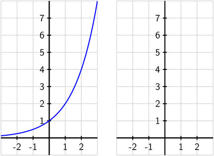
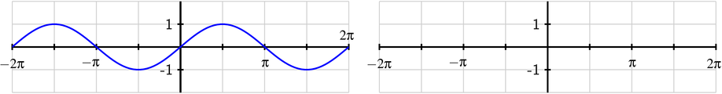
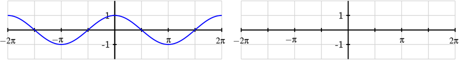
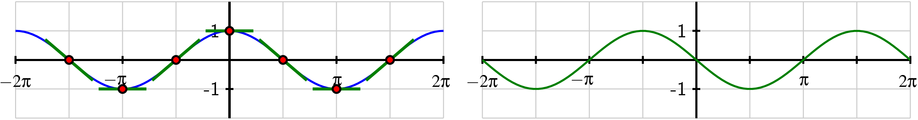

Section2.2The sine and cosine functions¶ permalink
{In this section, we strive to understand the ideas generated by the following important questions:
What is a graphical justification for why \(\frac{d}{dx}[a^x] = a^x \ln(a)\)?
What do the graphs of \(y = \sin(x)\) and \(y = \cos(x)\) suggest as formulas for their respective derivatives?
Once we know the derivatives of \(\sin(x)\) and \(\cos(x)\), how do previous derivative rules work when these functions are involved?
}
Subsection2.2.1Introduction
Throughout Chapter 2, we will be working to develop shortcut derivative rules that will help us to bypass the limit definition of the derivative in order to quickly determine the formula for \(f'(x)\) when we are given a formula for \(f(x)\). In Section 2.1, we learned the rule for power functions, that if \(f(x) = x^n\), then \(f'(x) = nx^{n-1}\), and justified this in part due to results from different \(n\)-values when applying the limit definition of the derivative. We also stated the rule for exponential functions, that if \(a\) is a positive real number annd \(f(x) = a^x\), then \(f'(x) = a^x \ln(a)\). Later in this present section, we are going to work to conjecture formulas for the sine and cosine functions, primarily through a graphical argument. To help set the stage for doing so, the following preview activity asks you to think about exponential functions and why it is reasonable to think that the derivative of an exponential function is a constant times the exponential function itself.
Preview Activity
Consider the function \(g(x) = 2^x\), which is graphed in Figure 2.2.1.
At each of \(x = -2, -1, 0, 1, 2\), use a straightedge to sketch an accurate tangent line to \(y = g(x)\).
Use the provided grid to estimate the slope of the tangent line you drew at each point in (a).
Use the limit definition of the derivative to estimate \(g'(0)\) by using small values of \(h\), and compare the result to your visual estimate for the slope of the tangent line to \(y = g(x)\) at \(x = 0\) in (b).
Based on your work in (a), (b), and (c), sketch an accurate graph of \(y = g'(x)\) on the axes adjacent to the graph of \(y = g(x)\).
Write at least one sentence that explains why it is reasonable to think that \(g'(x) = cg(x)\), where \(c\) is a constant. In addition, calculate \(\ln(2)\), and then discuss how this value, combined with your work above, reasonably suggests that \(g'(x) = 2^x \ln(2)\).
Figure2.2.1At left, the graph of \(y = g(x) = 2^x\). At right, axes for plotting \(y = g'(x)\).
Subsection2.2.2The sine and cosine functions
The sine and cosine functions are among the most important functions in all of mathematics. Sometimes called the circular functions due to their genesis in the unit circle
, these periodic functions play a key role in modeling repeating phenomena such as the location of a point on a bicycle tire, the behavior of an oscillating mass attached to a spring, tidal elevations, and more. Like polynomial and exponential functions, the sine and cosine functions are considered basic functions, ones that are often used in the building of more complicated functions. As such, we would like to know formulas for \(\frac{d}{dx} [\sin(x)]\) and \(\frac{d}{dx} [\cos(x)]\), and the next two activities lead us to that end.
Consider the function \(f(x) = \sin(x)\), which is graphed in Figure 2.2.3 below. Note carefully that the grid in the diagram does not have boxes that are \(1 \times 1\), but rather approximately \(1.57 \times 1\), as the horizontal scale of the grid is \(\pi/2\) units per box.
At each of \(x = -2\pi, -\frac{3\pi}{2}, -\pi, -\frac{\pi}{2}, 0, \frac{\pi}{2}, \pi, \frac{3\pi}{2}, 2\pi,\) use a straightedge to sketch an accurate tangent line to \(y = f(x)\).
Use the provided grid to estimate the slope of the tangent line you drew at each point. Pay careful attention to the scale of the grid.
Use the limit definition of the derivative to estimate \(f'(0)\) by using small values of \(h\), and compare the result to your visual estimate for the slope of the tangent line to \(y = f(x)\) at \(x = 0\) in (b). Using periodicity, what does this result suggest about \(f'(2\pi)\)? about \(f'(-2\pi)\)?
Based on your work in (a), (b), and (c), sketch an accurate graph of \(y = f'(x)\) on the axes adjacent to the graph of \(y = f(x)\).
What familiar function do you think is the derivative of \(f(x) = \sin(x)\)?
Figure2.2.3At left, the graph of \(y = f(x) = \sin(x)\).
It's very important to use a straightedge for accuracy.
First determine the slopes that appear to be zero. Then estimate \(f'(0)\) carefully using the grid. Use symmetry and periodicity to help you estimate other nonzero slopes on the graph.
\(f'(0) \approx \frac{\sin(h)}{h}\) for small values of \(h\).
Recall that heights on \(f'\) come from slopes on \(f\).
It might be reasonable to expect that the derivative of a trigonometric function is another trigonometric function.
It's very important to use a straightedge for accuracy.
\(f'(0) \approx 1\), as for each grid box we move horizontally, we go up about 1.5 grid boxes.
\(f'(0) \approx \frac{\sin(h)}{h}\) for small values of \(h\). Try using \(h = 0.001\) and \(h = -.001\).
Recall that heights on \(f'\) come from slopes on \(f\). From your earlier work, you should know several places \(f'(x) = 0\), plus that \(f'(0) \approx 1\). Plot these values on the grid for \(y = f'(x)\).
It might be reasonable to expect that the derivative of a trigonometric function is another trigonometric function, or possibly some multiple of such a function.
Reading left to right from \(-2\pi, \ldots, 2\pi\) with stepsize \(\pi/2\), the respective slopes of tangent lines appear to be \(1,0,-1,0,1,0,-1,0,1\).
From the limit definition,
\begin{align*}
f'(0) \amp = \amp \lim_{h \to 0} \frac{f(0 + h) - f(0)}{h}\\
\amp = \amp \lim_{h \to 0} \frac{\sin(0 + h) - \sin(0)}{h}\\
\amp = \amp \lim_{h \to 0} \frac{\sin(h)}{h}
\end{align*}
Because we cannot simplify the fraction \(\frac{\sin(h)}{h}\) any further algebraically, we estimate the value of the limit using small values of \(h\). Doing so, it appears that \(\lim_{h \to 0} \frac{\sin(h)}{h} = 1\), and thus \(f'(0) = 1\). This matches the estimate generated visually by sketching the tangent line at \((0,f(0))\). Finally, by the periodicity of the sine function, we expect the value of the derivative at 0 to match the derivative value at \(-2\pi\) and \(2\pi\).
See the figure below.
It appears that \(\frac{d}{dx}[\sin(x)] = \cos(x)\).
Consider the function \(g(x) = \cos(x)\), which is graphed in Figure 2.2.5 below. Note carefully that the grid in the diagram does not have boxes that are \(1 \times 1\), but rather approximately \(1.57 \times 1\), as the horizontal scale of the grid is \(\pi/2\) units per box.
Figure2.2.5At left, the graph of \(y = g(x) = \cos(x)\).
At each of \(x = -2\pi, -\frac{3\pi}{2}, -\pi, -\frac{\pi}{2}, 0, \frac{\pi}{2}, \pi, \frac{3\pi}{2}, 2\pi,\) use a straightedge to sketch an accurate tangent line to \(y = g(x)\).
Use the provided grid to estimate the slope of the tangent line you drew at each point. Again, note the scale of the axes and grid.
Use the limit definition of the derivative to estimate \(g'(\frac{\pi}{2})\) by using small values of \(h\), and compare the result to your visual estimate for the slope of the tangent line to \(y = g(x)\) at \(x = \frac{\pi}{2}\) in (b). Using periodicity, what does this result suggest about \(g'(-\frac{3\pi}{2})\)? can symmetry on the graph help you estimate other slopes easily?
Based on your work in (a), (b), and (c), sketch an accurate graph of \(y = g'(x)\) on the axes adjacent to the graph of \(y = g(x)\).
What familiar function do you think is the derivative of \(g(x) = \cos(x)\)?
It's very important to use a straightedge for accuracy.
First determine the slopes that appear to be zero. Then estimate \(g'(\frac{\pi}{2})\) carefully using the grid. Use symmetry and periodicity to help you estimate other nonzero slopes on the graph.
\(g'(\frac{\pi}{2}) \approx \frac{\cos(\frac{\pi}{2}+h)}{h}\) for small values of \(h\).
Recall that heights on \(g'\) come from slopes on \(g\).
It might be reasonable to expect that the derivative of a trigonometric function is another trigonometric function.
It's very important to use a straightedge for accuracy.
\(g'(\frac{\pi}{2}) \approx -1\), as for each grid box we move horizontally, we go down about 1.5 grid boxes.
\(g'(\frac{\pi}{2}) \approx \frac{\cos(\frac{\pi}{2}+h)}{h}\) for small values of \(h\). Try using \(h = 0.001\) and \(h = -.001\).
Recall that heights on \(g'\) come from slopes on \(g\). From your earlier work, you should know several places \(g'(x) = 0\), plus that \(g'(0) \approx 1\). Plot these values on the grid for \(y = g'(x)\).
It might be reasonable to expect that the derivative of a trigonometric function is another trigonometric function, or possibly some multiple of such a function.
Reading left to right from \(-2\pi, \ldots, 2\pi\) with stepsize \(\pi/2\), the respective slopes of tangent lines appear to be \(0,-1,0,1,0,-1,0,1,0\).
From the limit definition,
\begin{align*}
g'(\frac{\pi}{2}) \amp = \amp \lim_{h \to 0} \frac{g(\frac{\pi}{2} + h) - g(\frac{\pi}{2})}{h}\\
\amp = \amp \lim_{h \to 0} \frac{\cos(\frac{\pi}{2} + h) - \cos(\frac{\pi}{2})}{h}\\
\amp = \amp \lim_{h \to 0} \frac{\cos(\frac{\pi}{2}h)}{h}
\end{align*}
Because we cannot simplify the fraction \(\frac{\cos(\frac{\pi}{2}+h)}{h}\) any further algebraically, we estimate the value of the limit using small values of \(h\). Doing so, it appears that \(\lim_{h \to 0} \frac{\cos(\frac{\pi}{2}+h)}{h} = -1\), and thus \(g'(\frac{\pi}{2}) = -1\). This matches the estimate generated visually by sketching the tangent line at \((\frac{\pi}{2},g(\frac{\pi}{2}))\). Finally, by the periodicity of the sine function, we expect the value of the derivative at \(\frac{\pi}{2}\) to match the derivative value at \(-\frac{3\pi}{2}\).
See the figure below.
It appears that \(\frac{d}{dx}[\cos(x)] = -\sin(x)\).

The results of the two preceding activities suggest that the sine and cosine functions not only have the beautiful interrelationships that are learned in a course in trigonometry – connections such as the identities \(\sin^2(x) + \cos^2(x) = 1\) and \(\cos(x - \frac{\pi}{2}) = \sin(x)\) – but that they are even further linked through calculus, as the derivative of each involves the other. The following rules summarize the results of the activities 1 These two rules may be formally proved using the limit definition of the derivative and the expansion identities for \(\sin(x+h)\) and \(\cos(x+h)\)..
{
Sine and Cosine Functions: \knownindex{\lt main>derivative\lt /main>\lt sub>sine\lt /sub>} \knownindex{\lt main>derivative\lt /main>\lt sub>cosine\lt /sub>} For all real numbers \(x\),
We have now added two additional functions to our library of basic functions whose derivatives we know: power functions, exponential functions, and the sine and cosine functions. The constant multiple and sum rules still hold, of course, and all of the inherent meaning of the derivative persists, regardless of the functions that are used to constitute a given choice of \(f(x)\). The following activity puts our new knowledge of the derivatives of \(\sin(x)\) and \(\cos(x)\) to work.
Answer each of the following questions. Where a derivative is requested, be sure to label the derivative function with its name using proper notation.
Determine the derivative of \(h(t) = 3\cos(t) - 4\sin(t)\).
Find the exact slope of the tangent line to \(y = f(x) = 2x + \frac{\sin(x)}{2}\) at the point where \(x = \frac{\pi}{6}\).
Find the equation of the tangent line to \(y = g(x) = x^2 + 2\cos(x)\) at the point where \(x = \frac{\pi}{2}\).
Determine the derivative of \(p(z) = z^4 + 4^z + 4\cos(z) - \sin(\frac{\pi}{2})\).
The function \(P(t) = 24 + 8\sin(t)\) represents a population of a particular kind of animal that lives on a small island, where \(P\) is measured in hundreds and \(t\) is measured in decades since January 1, 2010. What is the instantaneous rate of change of \(P\) on January 1, 2030? What are the units of this quantity? Write a sentence in everyday language that explains how the population is behaving at this point in time.
\(f'(\frac{\pi}{6})\) tells us the slope of the tangent line at \((\frac{\pi}{6},\frac{\pi}{6})\).
Find both \((\frac{\pi}{2}, g(\frac{\pi}{2}))\) and \(g'(\frac{\pi}{2})\).
\(\sin(\frac{\pi}{2})\) is a constant.
\(P'(a)\) tells us the instantaneous rate of change of \(P\) with respect to time at the instant \(t = a\), and its units are “units of \(P\) per unit of time.”
By the sum and constant multiple rules, \(\frac{dh}{dt} = 3(-\sin(t)) - 4(\cos(t)) = -3\sin(t) - 4\cos(t)\).
The exact slope of the tangent line to \(y = f(x) = 2x + \frac{\sin(x)}{2}\) at \(x = \frac{\pi}{6}\) is given by \(f'(\frac{\pi}{6})\). So, we first compute \(f'(x)\). Using the sum and constant multiple rules, \(f'(x) = 2 + \frac{1}{2}\cos(x)\), and thus \(f'(\frac{\pi}{6}) = 2 + \frac{1}{2} \cos(\frac{\pi}{6}) = 2 + \frac{\sqrt{3}}{4}.\)
The tangent line passes through the point \((\frac{\pi}{2}, g(\frac{\pi}{2}))\) with slope \(g'(\frac{\pi}{2})\). We observe first that \(g(\frac{\pi}{2}) = (\frac{\pi}{2})^2 + 2\cos(\frac{\pi}{2}) = \frac{\pi^2}{4}\). Next, we compute the derivative function, \(g'(x)\), and find that
\[
g'(x) = 2x - 2\sin(x).
\]
Thus, \(g(\frac{\pi}{2}) = 2 \cdot \frac{\pi}{2} - 2 \sin(\frac{\pi}{2}) = \pi - 1\).
Hence the equation of the tangent line (in point-slope form) is given by
\[
y - \frac{\pi^2}{4} = (\pi-1)(x-\frac{\pi}{2}).
\]
Noting that \(\sin(\frac{\pi}{2})\) is a constant, we have \(p'(z) = 4z^3 + 4^z \ln(4) - 4\sin(z)\).
The value of \(P'(2)\) will tell us the instantaneous rate of change of \(P\) at the instant two decades have elapsed. Observe that \(P'(t) = 8\cos(t)\), and thus \(P'(2) = 8\cos(2) \approx -3.329\) hundred animals per decade. This tells us that the instantaneous rate of change of \(P\) on January 1, 2030 is about \(-3329\) animals per decade, which tells us that the animal population is shrinking considerably at this point in time. We might say that for whatever the population is on January 1, 2030, we expect that population to drop by about 3300 animals over the next ten years, provided the current population trend continues.
\begin{authornote}
This is an author note.
\end{authornote}
\item If we consider the graph of an exponential function \(f(x) = a^x\) (where \(a > 1\)), the graph of \(f'(x)\) behaves similarly, appearing exponential and as a possibly scaled version of the original function \(a^x\). For \(f(x) = 2^x\), careful analysis of the graph and its slopes suggests that \(\frac{d}{dx}[2^x] = 2^x \ln(2)\), which is a special case of the rule we stated in Section 2.1.
\item By carefully analyzing the graphs of \(y = \sin(x)\) and \(y = \cos(x)\), plus using the limit definition of the derivative at select points, we found that \(\frac{d}{dx} [\sin(x)] = \cos(x)\) and \(\frac{d}{dx} [\cos(x)] = -\sin(x)\).
\item We note that all previously encountered derivative rules still hold, but now may also be applied to functions involving the sine and cosine, plus all of the established meaning of the derivative applies to these trigonometric functions as well.
\hrulefill
\begin{exercises}
\item Suppose that \(V(t) = 24 \cdot 1.07^t + 6 \sin(t)\) represents the value of a person's investment portfolio in thousands of dollars in year \(t\), where \(t = 0\) corresponds to January 1, 2010.
At what instantaneous rate is the portfolio's value changing on January 1, 2012? Include units on your answer.
Determine the value of \(V''(2)\). What are the units on this quantity and what does it tell you about how the portfolio's value is changing?
On the interval \(0 \le t \le 20\), graph the function \(V(t) = 24 \cdot 1.07^t + 6 \sin(t)\) and describe its behavior in the context of the problem. Then, compare the graphs of the functions \(A(t) = 24 \cdot 1.07^t\) and \(V(t) = 24 \cdot 1.07^t + 6 \sin(t)\), as well as the graphs of their derivatives \(A'(t)\) and \(V'(t)\). What is the impact of the term \(6 \sin(t)\) on the behavior of the function \(V(t)\)?
\item Let \(f(x) = 3\cos(x) - 2\sin(x) + 6\).
Determine the exact slope of the tangent line to \(y = f(x)\) at the point where \(a = \frac{\pi}{4}\).
Determine the tangent line approximation to \(y = f(x)\) at the point where \(a = \pi\).
At the point where \(a = \frac{\pi}{2}\), is \(f\) increasing, decreasing, or neither?
At the point where \(a = \frac{3\pi}{2}\), does the tangent line to \(y = f(x)\) lie above the curve, below the curve, or neither? How can you answer this question without even graphing the function or the tangent line?
\item In this exercise, we explore how the limit definition of the derivative more formally shows that \(\frac{d}{dx}[\sin(x)] = \cos(x)\). Letting \(f(x) = \sin(x)\), note that the limit definition of the derivative tells us that
Recall the trigonometric identity for the sine of a sum of angles \(\alpha\) and \(\beta\): \(\sin(\alpha + \beta) = \sin(\alpha)\cos(\beta) + \cos(\alpha)\sin(\beta)\). Use this identity and some algebra to show that
\[
f'(x) = \lim_{h \to 0} \frac{\sin(x)(\cos(h)-1) + \cos(x)\sin(h)}{h}.
\]
Next, note that as \(h\) changes, \(x\) remains constant. Explain why it therefore makes sense to say that
\[
f'(x) = \sin(x) \cdot \lim_{h \to 0} \frac{\cos(h) -1 }{h} + \cos(x) \cdot \lim_{h \to 0} \frac{\sin(h)}{h}.
\]
Finally, use small values of \(h\) to estimate the values of the two limits in (c):
\[
\lim_{h \to 0} \frac{\cos(h) - 1}{h} \ \ \mbox{and} \ \ \lim_{h \to 0} \frac{\sin(h)}{h}.
\]
What do your results in (c) thus tell you about \(f'(x)\)?
By emulating the steps taken above, use the limit definition of the derivative to argue convincingly that \(\frac{d}{dx}[\cos(x)] = -\sin(x).\)